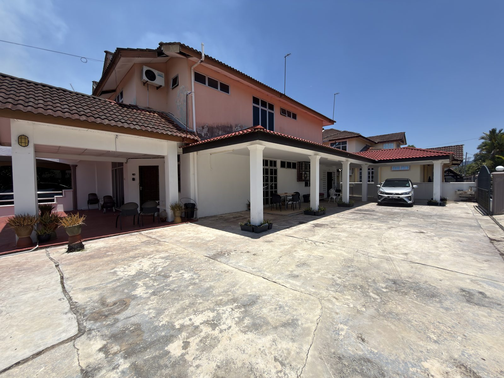

Tempat berdekatan Jitra2Stay mengikut masa perjalanan
Jitra2Stay berada di Taman Jitra Indah, sebelah pagar sisi Hospital Jitra. Lokasi ini sesuai untuk tetamu yang mahu akses mudah ke bandar, hospital, institusi, dewan dan kawasan rekreasi sekitar Kedah Utara.

5 hingga 10 minit
Hospital Jitra, Pusat Giat Mara, Dewan Jitra, Masjid Sharifah Fatimah, IKBN Jitra, MRSM Kubang Pasu, Dewan Tunku Anum, Dewan Wawasan, Majlis Perbandaran Kubang Pasu, IPD Kubang Pasu, Hotel Bustani, Lotus Jitra dan Bandar Jitra.
10 hingga 20 minit
Masjid Al Fateh Tanjung Pauh, Bandar Darulaman, ILP Jitra, POLIMAS, IPG Darulaman, IAB Cawangan Utara, C-Mart BDI, Yawata, Masjid Muttaqin, Hotel Darulaman, Kem Kelubi, SMSAH/Jenan, Tasik Darulaman, Darulaman Golf Club dan Darulaman Fantasia Aquapark.
20 hingga 30 minit dan ke atas
Airport Kepala Batas, Kolej Tentera Udara, Bandar Anak Bukit, Istana Anak Bukit, Masjid Zahir, Bandar Alor Setar, Changlun, UUM, UniMAP, UiTM Arau, Bukit Kayu Hitam dan kawasan sekitar Kedah Utara.
Tip sebelum bergerak
Masa perjalanan ialah anggaran sahaja dan boleh berubah ikut trafik, cuaca atau musim cuti. Sila buka Google Maps untuk laluan terkini sebelum bergerak.